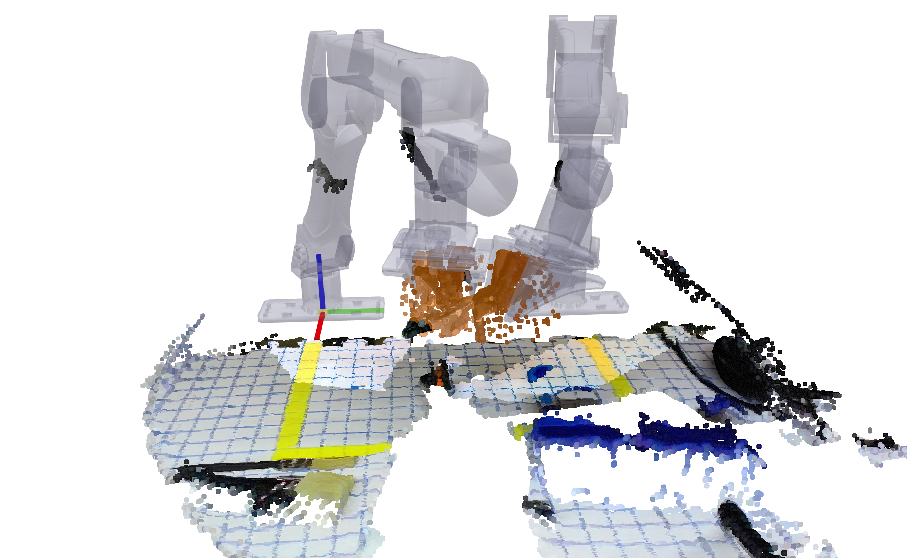

A robotics case study · October 2026
Open Gemini 4 Argon Robot Harness
A Zero-Shot Bimanual Handover Case Study
Background
Google released its Gemini 4 Argon robotics report on October 13. It included demonstrations of robot control, simulation reconstruction, and physical reasoning. I was particularly interested in the zero-shot manipulation example, where Argon used camera images and motion primitives to upright a mug and place a napkin inside it. After I tested it myself on RoboVista, our benchmark of robotics reasoning questions from real robot deployments, Gemini 4 Argon is the strongest model we evaluated at 81.3%, ahead of GPT-6 Astra (75.0%) and Claude Fable 5.1 (63.9%), and it improved on Gemini 3 Flash in every robotics domain [1] (leaderboard update).
From google's post, I found that its interface separates visual target selection from coordinate conversion. Gemini chooses an image location and a height; the harness converts them into a robot-frame target and checks the motion before execution.
- Grid overlay. The camera captures an RGB image. The harness uses camera calibration and measured robot state to draw the coordinate grid and gripper markers on it.
- Gemini query. Gemini receives the annotated image and robot state, selects a target, and supplies u, v, and z_plane. The height is chosen by the model—for example, an estimated grasp height above the table.
- Deproject. The harness maps the selected pixel to a ray leaving the camera, transforms the ray into the robot’s coordinate frame, and intersects it with the horizontal plane z = z_plane. This returns x and y; it does not measure object depth.
- Execute. The returned x and y, together with z_plane, become a target for a motion primitive. The harness solves inverse kinematics and checks the proposed motion before execution. A rejected proposal returns feedback to the model.
I find this approach promising because calibrated overlays give the model an explicit geometric reference for interpreting the scene, while deprojection connects its visual choices to robot coordinates.
I therefore implemented an open harness based on the observation interface and motion primitives described in Google’s technical report, and extended it to two arms. Bimanual handover provides a concrete test: the robot must choose compatible grasps, bring both grippers to a reachable transfer pose, and secure the receiving grasp before releasing the object.
The setup
The hardware consists of two six-degree-of-freedom YAM arms with parallel-jaw grippers, a ZED Mini overhead camera, and a D405 on the right wrist. All task coordinates are expressed in the right-arm base frame; the harness transforms commands for the left arm using the calibrated transform between the bases.
At each turn, Gemini receives the camera images and measured state for both arms. The images include a 2 cm world grid, pinch-point reticles, jaw-closing directions, and wrist directions. State includes measured and commanded end-effector poses, gripper openings, and holding estimates. The measured pose matters here: in the successful clamp run, logged endpoint errors ranged from 3.5 to 26.8 mm, attributed mainly to gravity sag.
The 3D point cloud is only for visualization. It is not supplied to Gemini, and the model does not consume the scene’s meshes or 3D geometry directly. Its observations are the camera images and numeric state. Coordinate conversion and motion checks are performed by the harness.
The plane-based deprojection uses the last overhead image, including its crop and zoom. The model still has to choose the height plane; the function does not recover an arbitrary object’s 3D geometry. I also added stereo-depth deprojection, although the successful clamp grasp used the plane-based version. The wrist view provides a closer observation of the contact region.
The open harness
Following Google's example, the open harness contains five parts:
What the open harness contains
- 01Observation format — what the model receives each turn.
- 02Action format — how the model answers. The harness parses only a restricted set of calls and simple arithmetic.
- 03Reusable skills — the primitives from Google's example (
look_at,deproject,grasp,goto,move_by, gripper commands), plus my bimanual additions:left/rightarms in one coordinate frame,parallelmotions, and depth-based deprojection. - 04Execution layer — expands each skill into motion segments, solves IK, and checks each segment before it runs. It rereads the robot's actual state between segments. Rejected plans go back to the model as short feedback.
- 05Prompt — the turn format, the skill definitions, and the handover protocol rules.
Observation format. Each turn, Gemini receives one observation with three parts. The overhead and wrist images carry a 2 cm world grid, a pinch-point reticle with the jaw-closing line, and the wrist direction for each arm, so the model can read positions directly from the picture. The arm state gives each arm's measured and commanded end-effector position, its gripper opening, and whether it appears to be holding something. The scene values give the table height, the grid plane, the workspace bounds, and the shared world frame (the right-arm base). After every motion, the harness sends a fresh observation, so the next plan starts from where the arm actually is rather than where it was told to go. In the successful clamp run, those two positions differed by 3.5 to 26.8 mm, mostly due to gravity sag. The observation contains no point cloud or 3D model.
Action format. Gemini replies in the turn format of Google's example: a one-sentence description of the scene, a # Plan: on the first turn, a short # Thought: on every turn, and then exactly one shell command. That command posts a short program of skill calls to /plan, and each call names the arm it controls. The harness parses this program instead of executing it, so it accepts only known skill names, numeric arguments, and simple arithmetic. A reply without a command, or one cut off at the token limit, is never run.
The clamp lies at about (0.34, −0.06) with its handle along +x; both grippers are empty.
# Plan: right arm grasps the handle base, left arm takes it from the side,
# right releases, left places it in the blue bin. Granularity: Pre-Grasp Hover Verify.
# Thought: zoom on the handle before choosing the grasp point.
curl -s -X POST http://127.0.0.1:8081/plan --data-binary @- <<'EOF'
right.look_at(x=0.34, y=-0.06, z=0.02, grid_z=0.02, zoom=2.0)
EOFA first turn in this format, written for this rig. Coordinates are in meters in the right-arm base frame.
When a plan cannot run, the reply carries a short reason instead of a corrected trajectory. These two came from the clamp run:
IK fails
left arm would collide, change grasp poseSkills. The skills are the vocabulary of that program. I kept the names and arguments of Google's primitives for perceiving, moving, and manipulating. I added depth-based deprojection and the two-arm pieces: left. and right. prefixes, a parallel call for independent motions, and one world frame shared by both arms. The handover is not a skill. It is a protocol that Gemini composes from these calls over several turns.
Execution layer. Gemini says where the gripper should go. The execution layer works out how the arm gets there. It does four things for every plan:
- Break each skill into small moves. For example,
graspbecomes: open the gripper, move above the object, move down, close the gripper, lift. - Compute the joint angles for each move (inverse kinematics). Commands for the left arm are first converted into that arm's own coordinates.
- Check each move before it runs. If the arm cannot reach the target or would hit something, the move is rejected and Gemini is told why. A automatic checker returns
OK,IK_FAILURE(cannot reach), orCOLLISION. - Run the move, then read the arm's real position. The move is sent to the arms through the robot driver. The next move starts from where the arm actually pose.
Prompt. Each turn, Gemini receives the system prompt, the one-sentence task, and the latest observation, and returns one plan. The overall structure:
SYSTEM PROMPT
│
├─ 1. Turn format
│ <one sentence describing the scene>
│ # Plan: ... (turn 1 only; also picks a granularity:
│ coarse | hover-and-verify | fine visual servoing)
│ # Thought: ... (≤ 40 words)
│ curl ... /plan (exactly one command)
│
├─ 2. Skills
│ look_at · deproject · grasp · goto · move_by · ...
│ arguments, units, world frame = right-arm base
│
├─ 3. Handover rules
│ receiver closes → GET /obs → giver opens alone → recheck holding
│
└─ 4. Response budget
answer within 10 s · thought ≤ 40 words
TASK "Pick up the clamp ... place it inside the blue bin."
EACH TURN + latest observation → one planSeparating the release from the retreat lets the model see whether the transfer worked before it moves on. The final run also used minimal reasoning effort.
What “zero-shot” means here
I use zero-shot here to mean that no task-specific model training or demonstration trajectory was supplied. The final task had no supplied waypoints, grasp coordinates, or object model, but the system prompt did include the skill definitions and handover rules developed during earlier attempts.
Putting the five parts together gives one loop:
The clamp handover
Runtime
The successful clamp session took 502.7 seconds from session start to done. I separated the time using the recorded API calls and execution events:
| Component | Time | Share |
|---|---|---|
| Model inference | 267.9 s | 53% |
| Review in the recorded harness | 154.4 s | 31% |
| Arm/gripper execution | 46.3 s | 9% |
| Capture, previews, and other overhead | 34.1 s | 7% |
The recorded review intervals account for 154.4 seconds. Removing them arithmetically leaves 348.3 seconds; this is not the runtime of an independently measured autonomous run. Model inference accounts for about 77% of that remaining time.
The final run used minimal reasoning effort, a ten-second answer budget stated in the prompt, and a requested 40-word limit on the thought text. Median response latency was 13.1 seconds, with a range of 5.3–28.9 seconds. Only five of 18 responses arrived within ten seconds. These settings therefore did not provide a reliable response-time bound.
At this rate, the model operates between motion segments rather than as a fast feedback controller. The local controller executes each segment while the next model decision waits for another observation. For this task, reducing inference latency and avoiding unnecessary calls would have a larger direct effect on total runtime than increasing motion speed. Which observations can be removed without reducing transfer reliability still needs to be tested.
Human review and the execution pipeline
During these recordings, a proposed program passed through a review stage before execution. Gemini selected the grasp coordinates and motion sequence; the operator inspected the proposed segments in Viser and approved or rejected them. The review interface did not require the operator to supply a replacement trajectory.
Gemini submits primitive calls.
Expand segments; solve IK and check clearance.
Inspect current and planned poses in Viser.
Run an approved segment; measure and observe again.

Open the 3D view, then choose the handover or a step to replay.
2R), and the overhead and wrist point clouds. Motion plays about 2.5× faster than real time, and waits for the model and for review are shortened to about a second. The clamp’s points are tinted orange from start to finish: on the table, in each gripper, during the handover, and in the bin. The arms’ own depth points and stray depth streaks above the table were removed.A composite action such as grasp expands into opening, approaching, descending, closing, and lifting. Each motion or gripper segment can be reviewed separately. Before the next segment, the harness reads the actual robot state and recomputes the remaining previews. For a parallel step, both arms’ motions are reviewed together.
The Viser interface displays the current robot pose, the proposed pose and path, and the camera point clouds. The operator can inspect reachability, clearance, and the placement of the grippers relative to the visible scene. The point cloud remains a visualization aid; Gemini receives the resulting status and camera observations, not that 3D display.
The newer verifier automates part of this gate by checking motion feasibility and returning OK, IK_FAILURE, or COLLISION. It does not establish that the receiving grasp can support the object after release. The separate observation before release and the holding recheck remain relevant even when motion approval is automated.
More objects and runs
The handover runs used a tape roll, a plastic spring clamp with red tips, a metal spring clamp, and a computer fan. The tape and metal clamp were successfully transferred and placed. The other two objects did not produce a confirmed complete episode.
The table covers six development runs. The harness and prompts changed between runs, so these are case studies rather than a controlled success-rate benchmark. Three additional sessions ended on hardware faults—a gripper encoder fault, an overhead-camera USB failure, and a motor over-temperature trip—and are outside this table.
| Run | Object | Turns | Duration | Outcome |
|---|---|---|---|---|
| 1 | Tape roll | 30 | ≈20m 26s | Success after a dropped transfer and re-pick. |
| 2 | Fan | 2 | 3m 31s | Stopped before motion to add response-length limits. |
| 3 | Fan | 20 | 12m 45s | Three slips from the thin frame; stopped. |
| 4 | Plastic clamp | 26 | 19m 27s | Receiver lost the clamp after release; subsequent placement unconfirmed. |
| 5 | Metal clamp | 11 | 9m 53s | Malformed API response crashed the agent. |
| 6 | Metal clamp | 18 | 8m 23s | Successful transfer and placement, with no drops. |
Durations follow the source report: time to completion for successful runs, session length for unsuccessful runs. Tape timing comes from its transcript because that version did not record an event log.
Failures and recovery
Show how the tape, plastic-clamp, fan, and API failures happened, and what changed
The tape run completed after two transfer attempts. In the first, the receiving gripper missed the rim. Its opening eventually fell to approximately 0.003, while the early harness still reported it as holding. The giving arm released and the tape fell. Gemini then re-picked the tape, changed the transfer pose, and completed the second attempt.
The tape run exposes the recovery loop: initial grasp, failed transfer, re-pick, another transfer, and successful placement.
The plastic clamp failed during release as well. The receiver grasped a narrow red tip and lost the object about 0.4 seconds after the giver opened. The object was re-picked, but the final placement was unclear, so this run is not counted as a success. In the fan run, the thin frame slipped from the gripper three times during carrying.
These observations motivated two changes: rechecking holding after each step, including on the arm that did not move, and making release conditional on a separate observation of the receiving grasp. The prompt also specified grasping a substantial part of the object and carrying with adequate clearance at low speed. The final clamp run followed the revised protocol and completed its first transfer without a drop. Since the object and other parts of the setup also changed, this does not isolate the protocol’s contribution.
A different failure occurred in the earlier metal-clamp run. A malformed API response crashed the agent, and shutdown released the arms. I added API retries and changed the failure handling so that an agent crash would leave the arms powered. This run is included in the table because it prevented task completion, although it was not a manipulation failure.
The tape and final clamp runs took 30 and 18 turns, respectively. The earlier tape run had no wrist image, holding recheck, or explicit handover protocol, and it also produced four replies without a valid command and two cut-off replies. The final clamp run produced neither type of malformed turn. Several settings changed together, so I treat this as a record of development rather than an ablation.
More detail can be found in the code: https://github.com/ehehee/open-gemini-robot-harness
References
- Shuangyu Xie*, Kaiyuan Chen*, Ziyang Chen, Simeon Adebola, Yixuan Huang, Zehan Ma, Tianshuang Qiu, Wentao Yuan, Dhruv Shah, Pannag R. Sanketi, Ken Goldberg. “RoboVista: Evaluating Vision Language Models for Diverse Robot Applications.” Robotics: Science and Systems (RSS), 2026. Leaderboard, updated 2026-10-15.